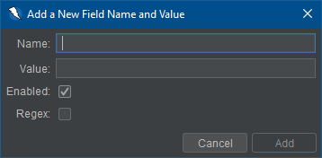

此表单处理器扩展允许根据字段名自定义表中使用的值的配置。
With this add-on the user can create new fields for fields that they wish to set the value of. Additionally, the user can modify any existing field's name and value to fit the fields that they are trying to set. 用户还可以禁用或删除任何字段，以便不使用自定义值 。 Field names, values, enabled, and regex status will be stored even after a ZAP session has concluded.
加载项提供了一组默认字段名，这些名称可以在窗体上找到，并且每个默认字段对应 一个值。 如果 用户想要，可以禁止，修改和删除这些默认值。
表单处理器可以在选项中找到。选择表单处理器选项卡将显示一个具有当前定义的所有现有值的表格 。下面展示了一个示例。

为了定义其他字段值，可以单击添加按钮。这将带来一个对话框，给用户提供字段信息。
当添加一个新的字段时，请注意以下内容:
该扩展允许用户修改现有字段的值和名称。可以 通过选择要修改的字段并单击修改按钮来完成此操作。

修改字段时，用户受到与创建新用户相同规则的限制。 The most common constraint when modifying a field is that the name cannot be the same as an existing field. (即没有重复字段)
用户可以随时删除字段。 To do so simply select the field that you wish to remove and click on the Remove button. 请注意，在继续操作之前将提示您确认删除，除非选中了删除而不确认复选框。
用户可能发现他们不想定义表单中的每个字段，而是在其中定义一个选定的字段表格。
在表单处理程序加载项中未定义的任何字段都将使用生成的ZAP默认值来匹配每个字段类型。(例如: 文本字段将具有值"ZAP")
A number of statistics are exposed via the add-on for add, modify, and remove operations.
In the following examples {name} will be the actual name of the Form Handler field.